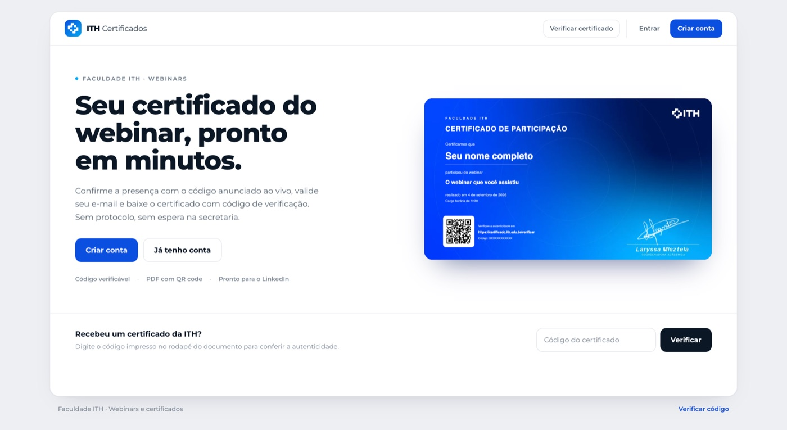
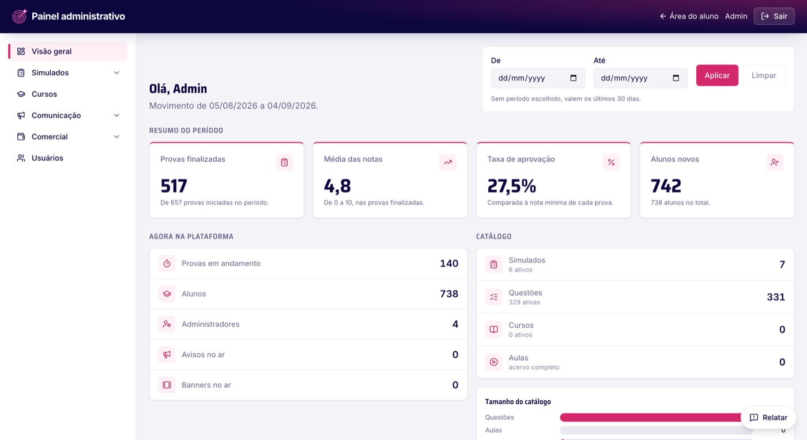
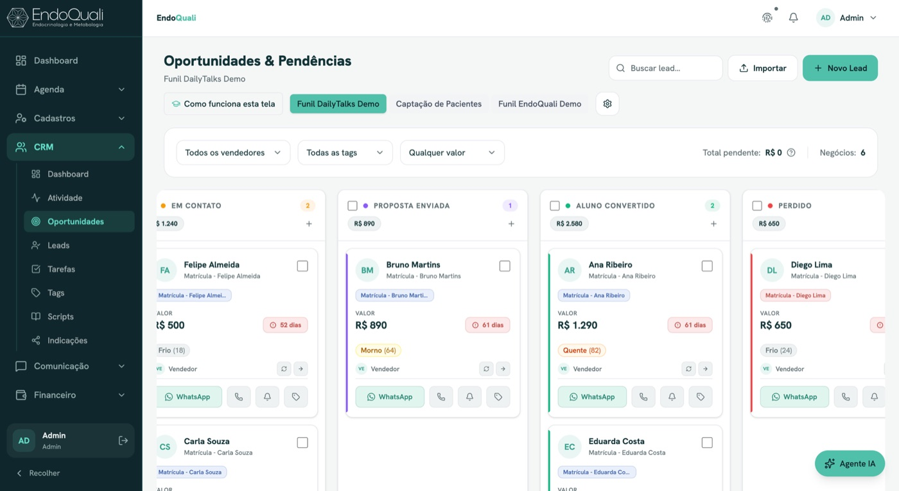

Faça sozinho
Sessão individual
Pra quem quer sair de uma sessão com produtividade real, sem depender de ninguém. Entro no seu processo de verdade e você sai com uma tarefa que não volta mais pra sua mão.
Quero uma sessãoSessão individual · Treinamento · Sistema sob medida
Encontro onde a operação trava, sozinho, com o time ou com uma empresa inteira. Você sai com uma mudança aplicada, um time treinado ou um sistema sob medida, conforme o que travou.
Preço e prazo definidos depois de entender o seu fluxo.
Fluxo operacional crítico
Gargalo encontrado
Achei o gargalo. A venda entrou, mas a passagem para a entrega ainda depende de alguém lembrar.
Ver o métodoComo trabalho
Preço e prazo saem da conversa, não da tela. Cada frente resolve uma necessidade diferente: autonomia, time treinado ou sistema pronto.
Faça sozinho
Pra quem quer sair de uma sessão com produtividade real, sem depender de ninguém. Entro no seu processo de verdade e você sai com uma tarefa que não volta mais pra sua mão.
Quero uma sessãoFaça com o time
Presencial em Fortaleza ou na cidade da sua empresa. O time inteiro aprende a tirar da mão o que hoje é manual, junto, no mesmo processo real.
Quero treinar meu timeFaça por mim
Mapeio o fluxo, encontro o gargalo e construo a solução sob medida pra resolver. Começa pelo Mapa do Gargalo e segue pra uma Sprint quando o fluxo pede implementação completa.
Método OPS · Sistema customizado
Esse passo a passo vale pra frente Sistema customizado. Sessão individual e Treinamento para equipes têm entrega mais direta, sem as três etapas. Ferramentas existentes continuam quando resolvem bem. Cada decisão nasce do fluxo real e do resultado contratado.
Mapeio processo, dado, dependência e ponto único de falha. A decisão vira um material que a equipe consegue usar.
Entrega: Mapa do Gargalo com Ativo de Arranque.Defino o fluxo, o responsável, o escopo e o critério de aceite.
Entrega: processo e cronograma visíveis.Coloco o fluxo em operação, treino a equipe e acompanho o indicador.
Entrega: operação funcionando e medida.Critério de fit · Sistema customizado
A empresa já vende, possui equipe e perdeu clareza entre as etapas da operação. Sessão individual e Treinamento não têm essa exigência. O mesmo método já foi aplicado em faculdade, escola, indústria, clínica, ótica e educação digital.
Provas de capacidade
Os cases abaixo cobrem setores diferentes. Alguns nasceram de um projeto fechado, outros são produtos próprios ou acompanhamento contínuo. O que se repete em todos é o mesmo princípio: entender o fluxo real antes de construir a solução.

Faculdade ITH
AVA completo e canais de aquisição
Desenvolvimento do ambiente virtual de aprendizagem inteiro, do acesso do aluno à emissão de certificado com código de verificação, junto com growth e os canais de aquisição. Faculdade de Goiânia com nota 5 no MEC, campus em cinco cidades e mais de 10 mil alunos formados.
faculdadeith.com.br
OdonConcursos
738 alunos e 517 provas em 30 dias
Área de membros e aplicativo de simulados para dentistas que estudam para concurso público. Banco de questões, correção automática, estatística de desempenho por aluno e painel com o movimento da plataforma em tempo real.
odonconcursos.com.br
Clínica de Trânsito NTC
R$ 20 mil para R$ 60 mil por mês
A operação saiu do papel e ganhou controle de agenda, cobrança e financeiro. O faturamento triplicou durante a pandemia.

Sistema Habilita
Mais de R$ 30 mil por mês recuperados
Alertas, controle de caixa e uma régua de cobrança tornaram visível uma dívida que a operação não acompanhava.

Daily Talks
Ecossistema operacional completo
Plataforma acadêmica, aplicativos do aluno, CRM comercial e gestão financeira da escola de inglês. Método testado por centenas de alunos, com matrícula aberta todo ano.

DedetPro / Certificado
Sistema multiempresa em produção
Um produto meu, não um projeto avulso. Hoje roda para várias empresas de dedetização, do atendimento em campo até a emissão de certificado e o financeiro.

Empório Box
ERP industrial completo
Comercial, produção, estoque, compras e financeiro numa fábrica de embalagens com mais de 10 anos de mercado, atendendo lojistas e distribuidores em todo o Brasil.

Ouse Ótica
4,9/5 em mais de 1.240 avaliações
Pipeline de vendas, agenda, atendimento e financeiro reunidos, do primeiro contato do lead até o pós-venda.

Clínica Viviane (EndoQuali)
Operação clínica completa
Prontuário, agenda, CRM comercial e financeiro numa base só, com o paciente respondido sem depender de alguém lembrar. A EndoQuali foi pioneira em atendimento concierge de Endocrinologia em São Paulo.

Danuzio News
Maior perfil de OSINT do Brasil
Portal e operação editorial por trás do maior perfil brasileiro de OSINT, com mais de 500 mil seguidores e alcance mensal de milhões de pessoas. Acompanhamento mensal em produção.

Portal Marsiglia
Mais de 350 mil seguidores
Portal de conteúdo e comunidade de assinantes de André Marsiglia, advogado constitucionalista, comentarista da Jovem Pan e colunista da Poder360. Acompanhamento mensal em produção.

Miquéias Mesquita
Minha especialidade é pegar um processo confuso, encontrar onde a informação para e transformar o fluxo em algo que a equipe consegue operar e medir.
Trabalhei por sete anos dentro da operação de uma autoescola. Organizei cobrança e gestão numa clínica durante a pandemia. Hoje construo e sustento a operação de escolas, clínicas, indústria, ótica, plataformas de mídia e negócios de educação digital que já vendem e precisam do próximo nível de crescimento.
Próximo passo
Envie uma mensagem com a etapa que mais gera retrabalho. Eu confirmo se o Mapa do Gargalo é a entrada adequada.
Quero avaliar meu fluxo